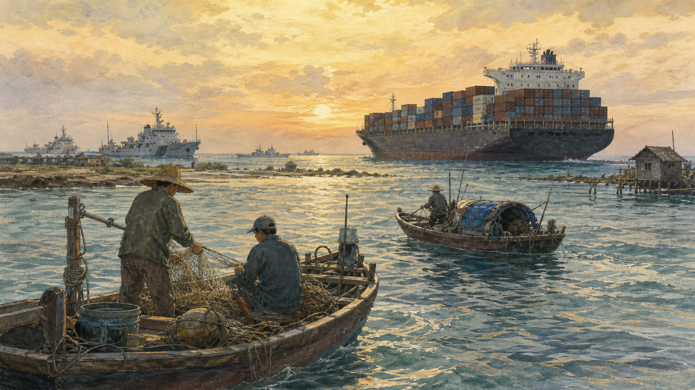

关键地点关系
凌晨四点，阿隆把最后一箱冰推上小船。祖父凭星光和季风认路，父亲后来用罗盘，他现在看卫星导航。屏幕上有坐标，海面上却没有彩色边界。当天气转坏、鱼群移动或海警船出现时，一条在会议室地图上很清楚的线，会突然变成一家人今晚能不能平安回港的问题。

这片海从来不只是争议
南海北接中国大陆与台湾，西邻越南，南到马来西亚、文莱和印度尼西亚一带，东望菲律宾。它通过马六甲等海峡连接印度洋与太平洋。商船运送能源、原料和制成品，渔船追逐随季节迁移的鱼群，海底铺着通信电缆。若只从争议岛礁看南海，就像只从十字路口的一次争吵理解整座城市。
几个世纪以来，华人、占族人、越南人、马来人、菲律宾群岛居民和阿拉伯商人借季风往返。船员在港口交换陶瓷、香料、金属和语言，也遭遇台风、海盗和浅滩。古地图、航海针路、沉船与地方口述证明人们很早就使用这片海，但“到过”“命名”“捕鱼”“管理”和现代意义的国家主权并不是同一件事。
这一区分很重要。现代国家常从古代活动中寻找连续性，因为历史能赋予主张情感重量；其他国家则强调殖民行政记录、实际占领或与海岸距离。每一类材料都可能相关，却没有哪一张旧地图能独自解决全部争端。历史提供来路，法律规定今天判断权利的语言，实力又影响规则能否落实。
岛、礁与沙洲为什么差别巨大
南沙、西沙、中沙相关地物数量众多，形态却很不一样。有些高潮时露出水面，有些只在低潮时出现，有些原本只是暗礁。渔民把它们当避风、晒网或辨路的标志；现代海洋法却要逐一追问：它是否天然高于高潮线？能否维持人类居住或自身经济生活？答案可能影响领海，甚至专属经济区和大陆架主张。
一个关键误解是“占有一块礁，就拥有周围两百海里”。《联合国海洋法公约》第121条区分岛屿与不能维持人类居住或自身经济生活的岩礁；低潮高地本身也不能像岛屿那样产生完整海域。人工填海可以造跑道和建筑，却不能把原本的法律身份“升级”。混凝土改变物理景观，不会自动改写公约。
不过海洋法主要处理海域权利，不负责裁定陆地领土究竟属于谁。要判断岛礁主权，还可能考察发现、有效行政、公开抗议、条约继承等材料。因此，一方说“这是领土主权问题”，另一方说“这是海洋权利问题”，两者可能分别抓住了争端的不同层次。危险在于把一个层次的答案当成全部答案。
现代边界为何来得这么晚
十九世纪末到二十世纪，法国控制印度支那，美国统治菲律宾，英国势力覆盖马来亚和北婆罗洲，日本在战争中占领多处岛礁。殖民政权测绘、立碑、驻守，又常用模糊语言处理遥远海域。第二次世界大战结束后，日本放弃若干岛屿权利，但相关和约没有把每一处归属都写得毫无疑问。新独立国家继承的，不是一张边界清楚的作业纸，而是一叠互相咬合的旧文件。
中国方面强调历代发现、命名、利用和管辖，以及二战后接收；越南强调历史行使和法国殖民行政的继承；菲律宾的部分主张与地理邻近、战后活动及“卡拉延群岛”有关；马来西亚和文莱较多以大陆架、专属经济区及实际管理为基础；台湾当局控制太平岛并延续与中国历史主张相关的叙事。各方主张并非完全相同，也不能简单归为“大家都要整片海”。
1947年，中华民国政府公布带十一段断续线的地图。中华人民共和国成立后沿用相关主张，后来地图常见九段线。断续线究竟表示岛屿归属、岛屿所产生海域、历史性权利，还是多层含义，长期存在解释争议。地图传播得越广，人们越容易忘记线条需要法律说明，而不是靠醒目程度获得效力。
《海洋法公约》改变了什么
二十世纪中叶以前，各国对领海宽度和海底资源规则分歧很大。科技让深海开采成为可能，远洋渔船也进入更远水域。经过多年谈判，1982年《联合国海洋法公约》通过，1994年生效。它把领海、毗连区、专属经济区、大陆架、公海航行和争端解决装进一个总体框架，被称为“海洋宪法”。
规则没有让地理变简单。南海沿岸彼此靠近，许多200海里范围重叠；岛礁身份又会影响计算。公约要求以协议实现公平解决，但“公平”不是简单从两岸正中画线，也不是谁先宣布谁就赢。海岸形状、岛屿影响和既有安排都可能进入谈判。
中国、菲律宾、越南、马来西亚、文莱等都是公约缔约方；美国签署但未批准，却把许多相关原则视为习惯国际法并开展航行自由行动。这个反差常被中国批评为选择性使用规则。美国则强调即使不是缔约方，也有维护普遍航行自由的利益。理解争论时，应把“是否加入条约”“是否接受某规则”“是否同意特定案件管辖”分开。
父子暂停一下
在纸上画两座相距300公里的小岛，各画200海里经济区，会发生什么？如果其中一处只是无人岩礁，结果是否应改变？这不是算术题，而是公平与规则怎样相遇的问题。
鱼不知道自己越过了哪条线
对阿隆一家，海不是战略棋盘，而是冰块、柴油、季风和债务。近岸鱼少了，船就要开得更远；开得更远，油费和风险都增加。不同国家的渔民可能在同一传统渔场相遇，他们既会交换烟和水，也可能争网、被驱赶或遭扣押。国家颁发的许可证给他们法律信心，却无法保证对方执法船承认同一张地图。
过度捕捞、破坏性捕捞、珊瑚退化和海水升温共同削弱渔业。把所有减少都归咎于“外国渔民”很有政治吸引力，却会遮住本国船队规模、补贴和监管问题。海洋生态不服从边界：一国保护幼鱼栖息地，若邻国仍在迁徙路径大量捕捞，努力会打折；反过来，联合休渔和科学调查可以在不先解决主权的情况下减少损失。
海上摩擦最容易由普通人承担。水炮、碰撞或扣船在电视上可能被包装成意志较量，船上的人却可能受伤、失去设备和一季收入。各方政府都说自己执法克制、对方挑衅；影像往往只有截取片段。可靠判断需要时间线、位置、船舶动作和完整画面，而不是只凭最响亮的标题。
安全困境怎样一步步长大
二十世纪后半叶，各方陆续驻守岛礁。1974年西沙海战、1988年赤瓜礁冲突都造成死亡，留下不同国家截然不同的纪念。进入二十一世纪，越南、菲律宾、马来西亚、台湾和中国大陆分别在控制地物上建设设施；中国自2013年前后开始的大规模填海最引人注目，形成跑道、港池、雷达和驻守条件，显著改变力量平衡。
建设方常说设施用于防御、搜救、气象或公共服务；邻国看到的则是飞机、导弹与持续部署的可能。美国以航行自由行动挑战其认为过度的海洋主张，并加强与菲律宾等盟友合作；中国认为域外军力逼近增加紧张。双方都用“维护秩序”描述自己，用“军事化”描述对方。
安全困境不等于没有选择。热线、海空相遇规则、提前通知、联合搜救和避免危险机动，都可以降低误判。但克制有国内政治成本：领导人可能被批评软弱，执法机构也可能通过更强硬行动争取预算和声望。当每一方都只向本国公众播放对方最危险的片段，妥协就更像背叛。
沿岸声索国的担忧
若不驻守、不执法，沉默可能被解释为放弃，资源与海上权利会逐渐流失。
航行使用国的担忧
若过度主张不受挑战，国际航道和公海自由可能被一点点改变。
法律回答了什么，又没回答什么
2013年，菲律宾依据《海洋法公约》附件七启动仲裁。中国拒绝接受和参与，认为争端实质涉及领土主权和海洋划界，已被中国的排除性声明挡在强制程序之外，并主张双方曾同意通过谈判解决。仲裁庭则认为菲律宾部分请求可以被界定为公约解释、地物法律身份和特定行为问题，因此即使一方缺席，程序仍可继续。
2016年裁决认为，在《公约》框架下，没有法律依据让九段线内的历史性权利超出公约允许范围；南沙有关高潮地物均不能产生专属经济区；并就黄岩岛传统捕鱼、仁爱礁地位、环境损害及若干执法行为作出判断。裁决没有判定任何岛礁主权归属，也没有划定中菲海上边界。
菲律宾及支持裁决的国家认为裁决终局并对当事方有拘束力，是澄清海洋权利的重要法律基准。中国政府始终称其无效、没有拘束力，坚持仲裁庭无管辖权，并在2026年裁决十周年再次重申这一立场。这里必须同时陈述两个层面：裁决文本在国际法程序中自称终局；现实执行又依赖国家接受、外交和力量。说“裁决解决了一切”不准确，说“它什么都没改变”也不准确。
怎样读裁决
先看“请求事项”和“裁判主文”，不要只读新闻标题。主权、海域资格、划界、行为是否合法是四个不同问题。裁决能回答它获得管辖的事项，不能替各方写出完整和平协议。
为什么行为准则谈了这么久
1992年东盟发表南海宣言，呼吁和平解决和克制。2002年，中国与东盟成员国签署《南海各方行为宣言》，承诺依据国际法以和平方式处理分歧、避免使争议复杂化，并朝更具实质性的行为准则努力。它建立了共同语言，却不是一部有强制法院和自动制裁的区域法典。
行为准则难谈，不只因为字句。各方要决定适用哪些海域，是否具有法律约束力，如何核查违反，是否限制与域外国家军演或能源合作，以及争议行为发生后由谁认定。规则越具体，越可能触碰主权和联盟；规则越模糊，又越难阻止危险行动。
东盟内部利益也不完全一致。菲律宾、越南是直接声索国，柬埔寨、老挝不临南海，印度尼西亚不自认南沙主权声索国却与中国有关海洋主张存在交叠关切。东盟依靠协商一致，能让小国共同发声，也使一份强硬声明容易被不同利益拖慢。缓慢不等于毫无价值，但不能把“仍在谈判”误当作风险已经受控。
父子暂停一下
如果你负责起草一条海上规则，只能先选一项：禁止撞船、共享船位、共同休渔、暂停新建设，或建立事故调查组。你会选哪一项？它为什么最容易或最难获得所有人同意？
危险来自“差一点”
近年中菲在仁爱礁、黄岩岛等水域多次发生拦截、碰撞、水炮和补给争执，中美海空力量也在更大范围内近距离活动。每一次事件都有各自视频、声明和法律解释。本文不采用未经稳定核实的即时伤亡或单方动机判断；可以确定的是，船只距离越近、国内舆论越激烈，操作失误升级为外交危机的机会越大。
菲律宾与美国的共同防御条约给危机增加联盟层。美方多次说明对菲律宾武装部队、公务船和飞机的相关攻击可能触及条约承诺；中国则警告不得借联盟介入争议。威慑的本意是让对方不敢冒险，但如果各方过度相信后援，也可能更敢在前线逼近。真正稳定的威慑需要清楚红线，也需要为退让留出口。
与此同时，绝大多数商船仍在通行，沿岸贸易继续增长，渔民仍每日出海。这种“生活照常”不是风险不存在，而是成千上万的人在维持正常。新闻镜头偏爱军舰，因为它们醒目；长期和平更依赖海警专业、船长判断、外交官措辞、科研合作，以及双方都愿意压下的一次冲动。
不等终局，也能少一点危险
南海争端不太可能靠一场会议一次解决。主权涉及国家尊严，海域涉及资源，岛礁涉及前沿部署，联盟涉及更大国竞争。把所有问题捆成一个总交易，看似彻底，实际上任何一项卡住都会全盘停摆。较现实的路径是分层：主权保留立场，海上先设护栏；资源争议暂不解决，渔业与环保先合作；军事互不信任仍在，搜救和事故调查先运行。
法律仍然重要。它给弱国提供一种不只比较舰船数量的语言，也给大国提供可预测环境。但法律不能独自驾驶海警船，也不能替政治领袖说服公众。历史同样重要，它解释情感为何强烈，却不能让古代航行直接覆盖现代公约。真正成熟的观察方式，是让历史、法律、生态与安全各坐在桌边，不让任何一种语言独占全场。
傍晚，阿隆的船靠港。孩子问他今天去了“谁的海”。他想了想，说那是祖父教他认风的海，是政府要求他办证的海，也是别国渔民同样记得潮汐的海。这个回答不能写进外交照会，却揭示和平的最低理由：地图上的线可以继续争论，真实航道上的人不能被当成线条的燃料。
夜谈问题
- 古代航行、命名和捕鱼能在多大程度上证明现代国家主权？
- 人工岛已经建成后，法律应怎样处理其现实安全影响与原本地物身份？
- 一项国际裁决在一方拒绝接受时，仍能发挥哪些作用？
- 渔业保护是否可以先于主权解决？共同休渔怎样防止有人“搭便车”？
- 域外大国的军事存在更可能维护航行自由，还是加剧安全困境？为什么？
- 如果新闻只提供一方拍摄的三十秒视频，你还需要哪些信息才能判断责任？